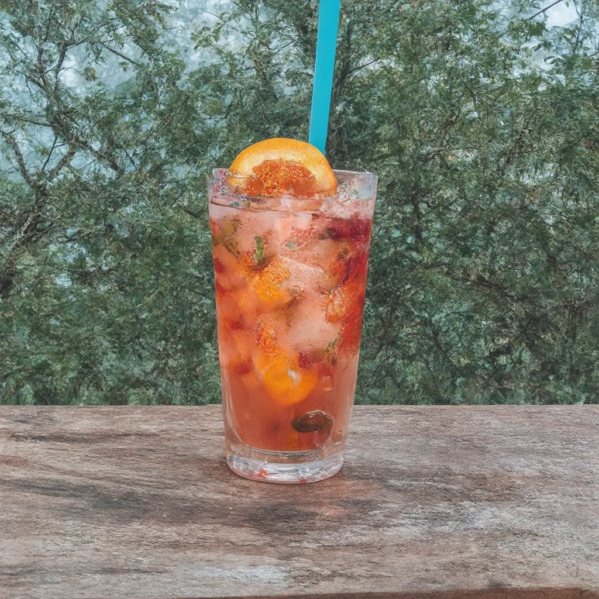

STRAWBERRY ORANGEADE

STRAWBERRY ORANGEADE
STRAWBERRY ORANGEADE IS A FRUIT-BASED BEVERAGE THAT BLENDS THE FLAVORS OF STRAWBERRIES AND ORANGES, TYPICALLY MADE BY COMBINING FRESH STRAWBERRY PUREE OR JUICE WITH ORANGE JUICE, SWEETENERS, AND WATER. IT IS A REFRESHING DRINK COMMONLY SERVED COLD, ESPECIALLY DURING SUMMER MONTHS, AND IS KNOWN FOR ITS BRIGHT, TANGY-SWEET FLAVOR PROFILE. STRAWBERRY ORANGEADE IS OFTEN A HOMEMADE RECIPE BUT CAN ALSO BE FOUND IN VARIOUS CAFES, RESTAURANTS, AND COMMERCIALLY BOTTLED.
HISTORY
THE ORIGIN OF STRAWBERRY ORANGEADE IS NOT WELL-DOCUMENTED, BUT IT IS LIKELY A VARIATION OF TRADITIONAL LEMONADE AND ORANGEADE DRINKS, WHICH HAVE BEEN POPULAR FOR CENTURIES. THESE CITRUS-BASED BEVERAGES HAVE ROOTS IN MEDITERRANEAN AND MIDDLE EASTERN CULTURES, WHERE LEMONS AND ORANGES WERE PLENTIFUL. AS STRAWBERRIES BECAME MORE WIDELY AVAILABLE, PARTICULARLY IN THE AMERICAS AND EUROPE, THEY WERE INCORPORATED INTO VARIOUS DRINKS. STRAWBERRY ORANGEADE BECAME POPULAR IN THE LATE 20TH CENTURY, ESPECIALLY IN NORTH AMERICA, AS PEOPLE SOUGHT CREATIVE COMBINATIONS OF FRUIT FLAVORS FOR SOFT DRINKS AND REFRESHERS.
INGREDIENTS
THE INGREDIENTS IN STRAWBERRY ORANGEADE CAN VARY, BUT THE BASIC COMPONENTS USUALLY INCLUDE:
🍓 FRESH STRAWBERRIES OR STRAWBERRY PUREE 🍓
🍊 FRESH ORANGE JUICE (FROM SWEET OR SOUR ORANGES, DEPENDING ON TASTE PREFERENCE) 🍊
💦 WATER (EITHER STILL OR SPARKLING) 💦
🍯 SWEETENER (SUCH AS SUGAR, HONEY, OR SYRUP) 🍯
🧊 ICE (OPTIONAL FOR SERVING) 🧊
SOME VARIATIONS MAY INCLUDE LEMON JUICE, HERBS LIKE MINT OR BASIL, OR EVEN A SPLASH OF CARBONATED SODA FOR ADDED FIZZ.